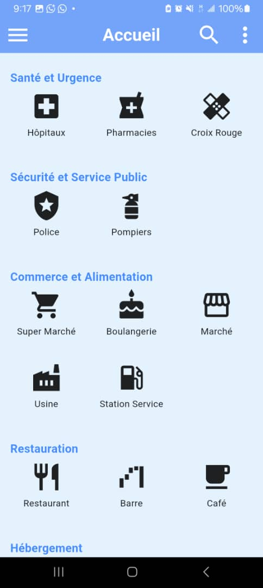
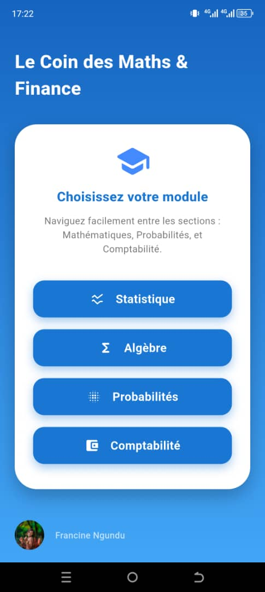
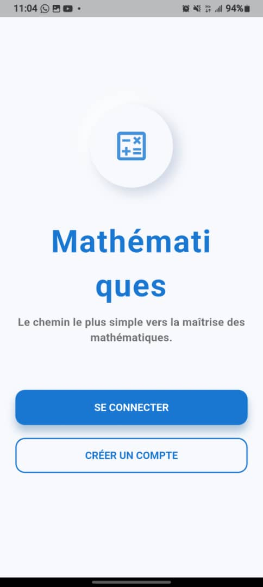
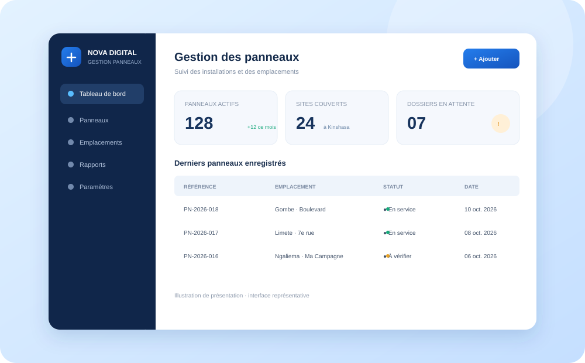
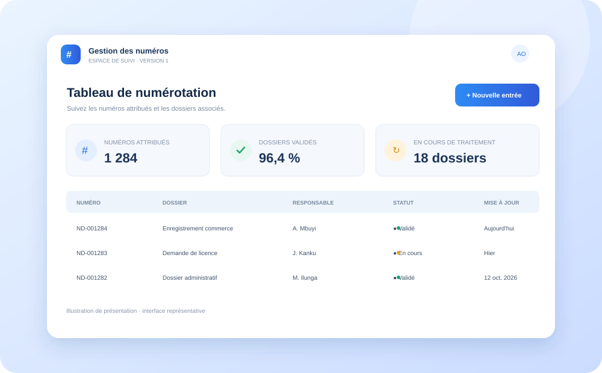
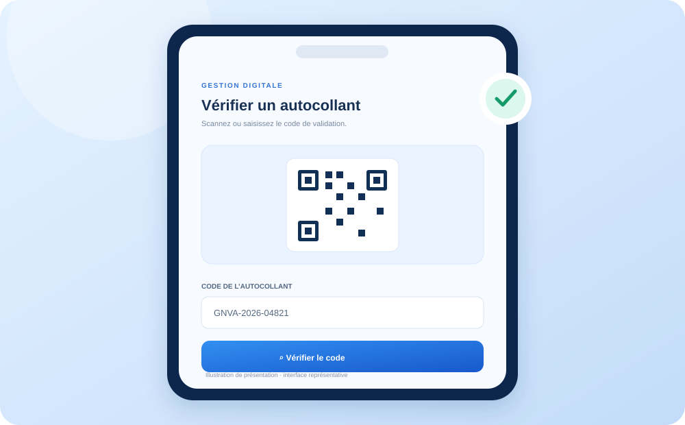

Partir du terrain
Écouter les réalités locales avant de concevoir des solutions adaptées aux usages et aux besoins réels.
Nova Digital Congo imagine et développe des outils numériques pensés ici, pour répondre aux défis concrets des entreprises, des institutions et des communautés.
La technologie prend tout son sens lorsqu’elle résout les bons problèmes, avec les personnes qui les vivent au quotidien.
Écouter les réalités locales avant de concevoir des solutions adaptées aux usages et aux besoins réels.
Transformer les idées en applications, plateformes et outils fiables, simples à prendre en main.
Valoriser l’expertise congolaise et contribuer à une génération qui maîtrise ses propres outils.
Explorez les applications et services développés par notre équipe. Les boutons d’ouverture apparaissent uniquement pour les projets dont l’adresse est disponible.

APPLICATION MOBILEOrienter rapidement les personnes vers des services essentiels comme les hôpitaux, les pharmacies et les postes de police.
Aperçu du projet · lien non fourni
APPLICATION MOBILEDes outils de calcul pour la statistique, les probabilités, la comptabilité et l’analyse mathématique.
Aperçu du projet · lien non fourni
ÉDUCATIONDes exercices interactifs et corrigés pour accompagner les élèves dans leur apprentissage des mathématiques.
Aperçu du projet · lien non fourni
OUTIL DE GESTIONUn outil web qui accompagne la gestion des panneaux et simplifie le suivi des opérations.
Ouvrir l’application ↗
SUIVI NUMÉRIQUEUne solution de suivi des numéros et des opérations pour simplifier le traitement quotidien.
Ouvrir l’application ↗
CONTRÔLE DIGITALLa validation numérique des autocollants, avec un processus de contrôle plus fluide et plus lisible.
Ouvrir l’application ↗✳ Les images des trois applications web sont des illustrations de présentation, car leurs captures d’écran n’étaient pas dans les fichiers fournis.
Nova Digital est ouverte aux collaborations et aux partenariats qui font avancer des projets numériques utiles : expertise, accès au marché, déploiement et formation.
Présentez brièvement votre organisation et la collaboration envisagée.
Vos informations servent uniquement à répondre à cette demande de partenariat.